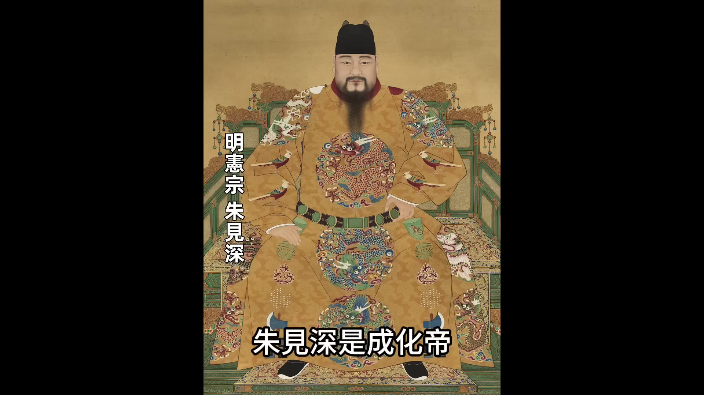
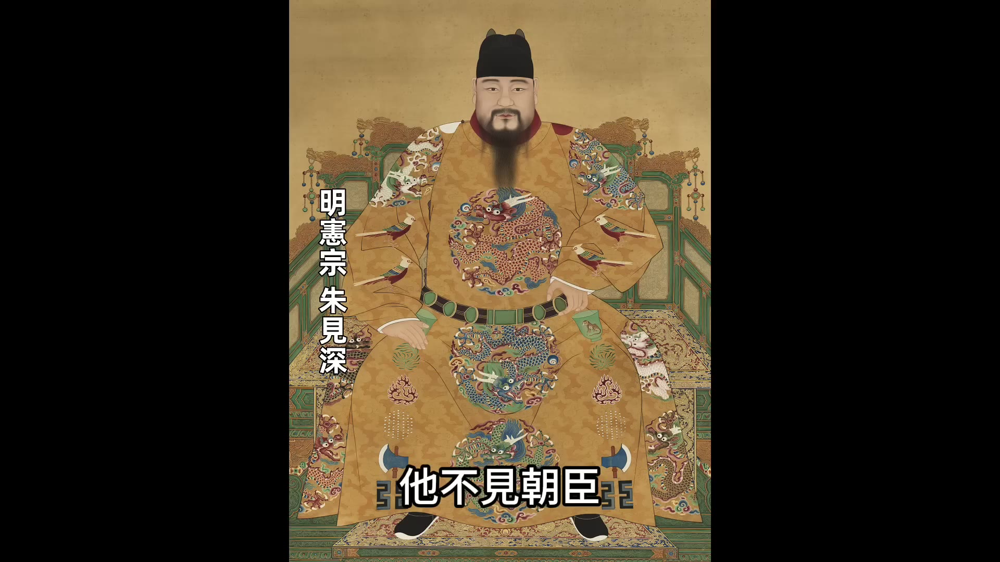
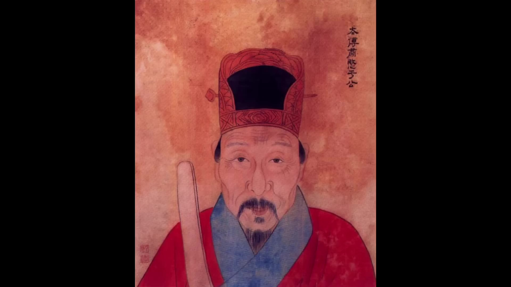
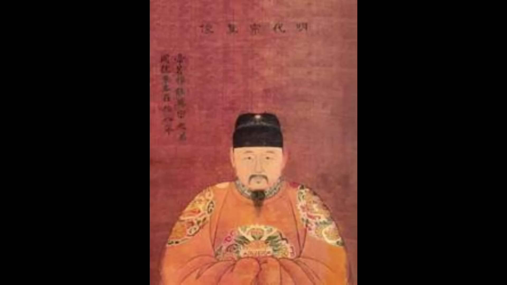
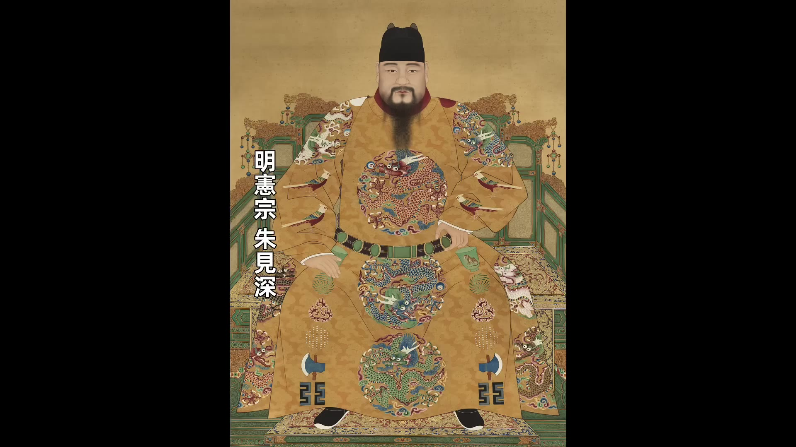
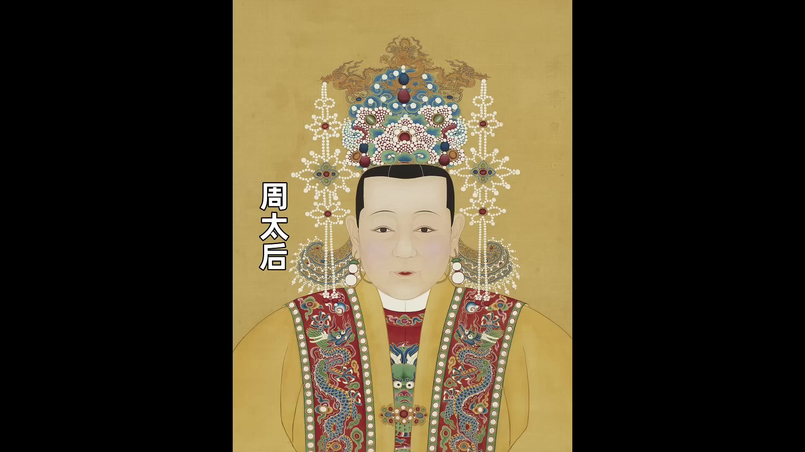
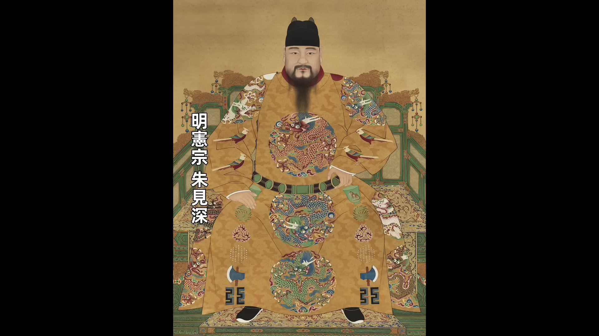
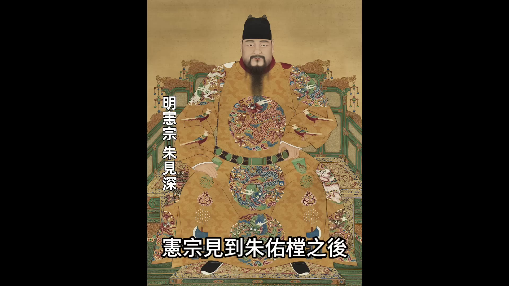
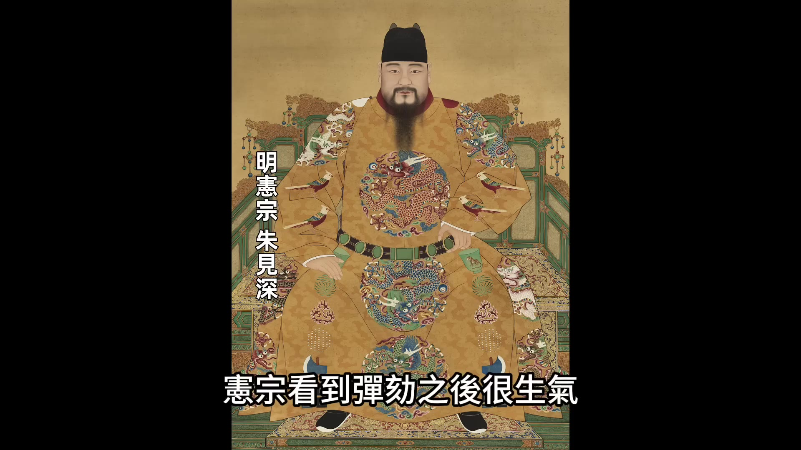

00:00:00
大家好，今天我們講明憲宗朱見深。

朱見深是成化帝，成化朝一共23年，是明朝中期一段很平常的時期。成化期間的明朝既沒有強大的外敵，也沒有大規模的內亂，皇帝自己也不折騰。但是越是平常無奇的年份，越能看出一個朝代的特點。我們從成化朝的一些小事來看看明朝是怎麼樣運轉的，也來聊聊這個表面繁榮的大明是怎麼被蛀空的。成化朝整個時期雖然波瀾不驚，但是朱見深這個皇帝還是很有特點的。

他抗拒跟朝臣當面議政，大婚一個月就廢皇后，專寵一個比他大17歲的妃子，讓太監的權力更上一個台階，沈溺方術，主祈求長生。今天我們就講講明憲宗朱見深和成化朝這些有意思的事。
天順八年正月，明英宗去世，18歲的太子朱見深即位。朱見深即位之後做的第一件大事是給于謙平反。

于謙是景泰朝的功臣，他在北京保衛戰中立下了巨大功勞。在景泰朝八年時間裡，于謙為朝廷做出過很多貢獻。但是在明英宗復辟之後，于謙被冤枉以「意欲迎立藩王士子」的罪名被處以死刑。于謙是被冤枉的，這在明英宗天順朝的後期，朝廷上就已經清楚了。尤其是陷害于謙的主謀曹吉祥和石亨被處死之後，就有過大臣想要為于謙平反，但是礙於英宗的面子，在英宗沒死之前平反一直沒提出來。一直到英宗去世，朱見深剛一即位，就有大臣提出來為于謙平反，朱見深當即答應同意為于謙平反。
除了為于謙平反，朱見深也同意為景帝朱祁鈺平反。英宗復辟之後，把景帝朱祁鈺貶為郕王，景帝死了之後，英宗給他的謚號是郕戾王（「戾」是暴戾的「戾」，有知過不改的意思），這是一個非常貶義的謚號，而且景帝的葬禮包括祭祀都是按照「王」的身份進行的，這對他也不公平。

其實景帝在位八年，為大明做出了很多貢獻。首先他為大明扛過了最艱難的時期，土木堡戰敗之後的時期，這個時期是景帝扛過來的。然後景帝在位的八年政治也算清明，他重用能臣，把朝廷恢復得井井有條。所以給他一個郕戾王的謚號顯然不太公平。大臣上奏之後，朱見深也同意給景帝平反，平反之後恢復景帝的皇帝身份，然後謚號改成了「恭仁康定景皇帝」，這樣就算是給了景帝一個客觀的評價。
其實從朱見深同意給景帝平反，可以看出來他是一個很寬容的皇帝。因為景帝在位的時候對朱見深並不好，景帝登基的時候，朱見深是太子，景帝為了立自己的兒子當太子，不顧大臣的勸阻，強行廢了朱見深的太子位。當時朱見深才5歲，被廢之後他受盡委屈，每日都擔驚受怕，一直到他10歲的時候，英宗復辟，朱見深才被重新立為太子。所以朱見深能給景帝平反，可以說他是一個很寬容的皇帝。
但是我們從朱見深的一生的作為來看，他的寬容不只是對于謙對景帝，他對那些罪大惡極的人也都很寬容。從這點來看，說他寬容可能並不準確，更準確的說他是定見不足，沒有主見，只要有大臣上奏，他就很少提出反對意見。這是朱見深最大的特點。

朱見深登基的第一年就做了一件讓所有人都瞠目結舌的事，他七月立皇后吳氏，八月就把皇后給廢了。從結婚到離婚，一個月，別說古代啊，就算現在婚姻自由的現代，一個月就離婚的也很少見。朱見深為什麼廢後？他是為了另外一個女人，另外一個比他大17歲的女人——萬妃。當時朱見深18歲，皇后吳氏19歲，萬妃35歲。根據記載，吳氏的描述是「聰敏知書多才多藝」，萬妃的描述是「貌雄聲巨類男子」，一個跟朱見深年齡相當，聰明好看又多才多藝，另外一個比朱見深大17歲，長得像男人，聲音又很粗。但是朱見深偏偏喜愛這個萬妃，這點滿朝的文武大臣都表示不能理解，就連朱見深的生母周太后也不能理解。

周太后她也是比朱見深大17歲，她跟萬妃是同歲，所以她對自己的兒子寵愛個跟自己一邊大的女人，她更加不能接受。她問朱見深說：「彼有何美而承恩多？」意思是說那個萬妃有什麼漂亮的，值得你給她那麼多恩寵？

朱見深回答說：
「彼撫養我長大，有她在我身邊，我就感到安穩。至於這種感覺到底是什麼，很難說清楚。」
朱見深為什麼會獨寵萬妃？
00:05:01
要從他小時候說起。剛才我們說過了，朱見深小時候過得很波折，他五歲被廢太子，十歲之前都生活在景帝的陰影之下。他童年過得是戰戰兢兢，甚至隨時都有可能有生命危險。在他這個最驚慌恐懼的年月里，是萬妃陪伴在他身邊，陪他度過了人生中這段最黑暗最孤獨的時光。萬妃的名字叫貞兒，她四歲入宮，入宮之後被分配到孫太后身邊當一個小宮女。正統十四年，英宗御駕親征被瓦剌俘虜，當年朱見深兩歲，兩歲的朱見深被立為皇太子，從此便由孫太后撫養。當時在孫太后的宮中服侍小朱見深的宮女就是萬氏，萬氏當年十九歲。
朱見深五歲被廢太子到十歲重新當太子，再到十八歲登基當皇帝，朱見深從萬氏身上得到的應該是既有母愛也有成熟女性的溫存，以至於他把萬氏看成是全部感情的依託。英宗和孫太后給朱見深選妃的時候，朱見深想立萬氏當太子，但孫太后堅決不同意，最後由英宗做主，給朱見深選定的是吳氏。朱見深登基之後，吳氏就是皇后。吳氏當皇后之後掌管后宮，她當年十九歲，風頭正盛，沒想到這個萬妃竟然完全不把她放在眼裡。萬妃恃寵而驕，處處搶風頭，連宮女太監都覺得萬妃行事太過分。吳皇后找了個機會打了萬妃一頓板子，教訓她一下，沒想到這下惹禍了，朱見深居然偏袒萬妃，把皇后給廢了。估計年輕的吳皇后怎麼也想不明白自己到底是哪輸給了那個年紀叉大、長得又醜的老女人。
從這之後，所有人都明白了萬妃的地位在后宮裡面，沒有人再敢得罪萬妃，連繼任的王皇后對萬妃都是小心翼翼，唯恐得罪。成化二年，朱見深有了第一個兒子，這個兒子的生母就是萬妃。這下萬妃更是風頭大盛，朱見深立刻進封她為萬貴妃。但是好景不長，這個兒子連名字都沒來得及取，僅僅十個月就夭折了。這對萬妃來說打擊巨大，憲宗朱見深心疼萬妃，從此之後專寵萬妃。但是一晃過去兩三年，萬妃也沒能再次懷孕。這時候萬妃已經四十歲了，懷孕應該非常困難。看到這種情形，皇帝不急大臣急，大臣們接連上奏折，居然管起了皇帝的家務事，他們讓皇帝雨露均沾，不能專寵萬貴妃。大臣們不厭其煩的一次又一次勸諫，應該是起了作用，憲宗開始寵幸其他的妃子。
成化五年，宮中終於有了動靜，憲宗的一個妃子柏妃生下一位皇子，皇子取名叫朱祐極。文官大臣們都非常高興，他們上奏想讓憲宗立朱祐極為皇太子，但是憲宗卻不肯。不知道他是心疼萬妃呢還是懼怕萬妃，反正他肯定是為了照顧萬妃的心情，想再等一等看萬妃能否還能再生一個兒子。一等就等到朱祐極三歲了，朱祐極三歲，憲宗還是不肯立太子，一次又一次的勸諫。憲宗的生母周太后也進逼，周太后也不想讓萬妃的兒子當太子，別說現在萬妃沒有兒子，就算萬妃再生一個兒子，她肯定也不願意讓萬妃的兒子當太子，畢竟萬妃跟自己同齡，讓她的兒子當太子，這成何體統。周太后聯合外廷的大臣們一起進逼，憲宗終於屈服，成化七年十一月，他立朱祐極為皇太子。
可是皇太子冊立才兩個月，突然就病逝了，皇太子的病情非常奇，來勢凶猛，生病一天就去世了。這時候就有傳聞說是萬妃下的毒手，是萬貴妃毒死了皇太子。在接下來的幾年，憲宗朱見深居然一個兒子都沒有。有很多史料記載說是萬貴妃心狠手辣，仗著自己受寵，横行后宮，凡是有其他妃嬪懷孕的，萬貴妃都派人去下藥，這導致后宮一直都沒有皇子降生。這個說法應該有一定的可信度。我們從事實來分析，憲宗正值壯年，他身體沒什麼毛病，不是生不出來孩子的體質。因為憲宗在位期間一共有十四位皇子，但是這十四位皇子有十一個是在成化十二年以後才生出來。在成化七年以前，憲宗一共只有三個皇子，皇長子是萬妃生的兒子，皇次子是朱祐極，這兩個剛才我們都說過了，第三個兒子是朱佑樘，朱佑樘就是後來的明孝宗。朱佑樘是成化六年出生的，但是他是秘密出生、秘密養大的。關於朱佑樘生長的過程，我們一會會詳細說。朱佑樘公開身份之後，在成化十一年十一月被立為皇太子。從這開始，也就是說從成化十二年開始，憲宗後面的兒子們就一個一個都出生了。所以從成化七年到成化十二年，整整五年時間，一個皇子都沒出生過，這段時間應該就是萬貴妃幹過墮胎的事，妃嬪懷孕一個。
00:10:00
她就下手一個導致一個皇子都沒生出來她想的應該是還寄希望於自己能懷孕她要是能懷孕再生一個皇子她生的就還是皇長子還有被立為太子的機會所以她不讓任何一個皇子在這之前出生只不過她没想到的是在她不知道的情況下朱佑樘已經出生了而且被秘密的撫養到了6歲朱佑樘公開身份之後被立為皇太子在這之後萬貴妃看攔也攔不住了她自己肯定也不能再生育了她索性就放棄了不再下毒手憲宗的皇子們一個接一個的生出來了所以朱佑樘的出生是一個關鍵的轉折點接下來我們就說說朱佑樘是怎麼秘密出生的
關於朱佑樘的出生有一段很流行的故事這段故事說的是朱佑樘的生母姓紀是一個普通的宮女憲宗偶然有一天遇到了這個姓紀的宮女心血來潮寵幸了一次寵幸之後也沒當回事沒想到這個宮女居然懷孕了懷的就是朱佑樘萬貴妃當時橫行后宮后宮的妃嬪懷孕她一個都不放過這個姓紀的宮女懷孕她也不放過她派了一個婢女前去下藥這個婢女不知道是沒忍心呢還是怎麼了她居然放過了姓紀的宮女回去之後她也沒把實情告訴萬貴妃結果這個孩子就保住了等姓紀的宮女把孩子生下來萬貴妃聽到消息之後她大怒她改派了一個太監讓太監去把孩子弄死她派的這個太監叫張敏張敏去了之後他也沒下手他把朱佑樘母子安排到宮里一個隱秘的處所然後暗中幫助他們給他們提供食物把朱佑樘養大朱佑樘出生是在成化六年張敏的保密工作做的很好一直到成化十一年有一天張敏給憲宗梳頭憲宗對著鏡子說說我都快老了還沒有皇子呢張敏突然趴在地上說說奴才死罪萬歲您已經有皇子了憲宗一愣問皇子在哪張敏知道這個事說出來他自己就死定了但是他還是把事情的原委都告訴了憲宗當天就派使者去迎接皇子迎接皇子的使者到了朱佑樘母子住的地方之後朱佑樘的母親跟他說現在事情曝光了我肯定是活不成了你去吧你看見穿黃色衣服而且有鬍鬚的人那個人就是你父親
6歲的小朱佑樘被使者接走

憲宗見到朱佑樘之後說的第一句話是是我兒子長得像我英宗把已有皇子的事情昭告天下這段故事裡面的內容：《明史•孝穆紀太后傳》是記錄在之後的各種書籍都是根據這段故事來轉載的有歷史學者專門去查這段故事的來源發現這段故事在成化、弘治直到隆慶期間都沒有記載最早出現是在余慎行的《穀山筆塵》於慎行是隆慶二年的進士做官做到禮部尚書然後在萬曆十八年退休退休之後在家寫書《穀山筆塵》就是這段期間他寫的於慎行寫朱佑樘出生這段故事的時候他特意說明說這個故事是在萬曆十二年的時候他聽一個老太監說的於慎行寫書的時候很少特意說明在這裡他特意說明一下說明他表示很慎重或者說他自己可能本身就對這種傳聞有所懷疑《穀山筆塵》余慎行是在萬曆年間寫的《明史》所以後面的《罪惟錄》、就都按照他這個說法來記錄這個故事但是這個說法當時在萬曆年間就有人懷疑沈德符是萬曆年間一個著名的文學家也是著名的史學家他在著作裡面引用了成化年間禮部侍郎尹直的資料尹直寫過一本《瑣綴錄》裡面記載了另外一個版本的《瑣綴錄》朱佑樘出生的故事故事的前面都一樣寫的也是憲宗偶然遇到了姓紀的宮女然後寵幸了這個宮女紀氏紀氏懷孕了懷孕之後的情節就不一樣了他記載的是姓紀的宮女懷孕之後萬貴妃和憲宗都知道了
憲宗把紀氏宮女安頓到了安樂堂他對萬貴妃說說姓紀的宮女生病了得的病是「痞」就是肚子裡面長了硬塊當時人對痞病非常畏懼而且會傳染所以憲宗以痞病的名義把姓紀的宮女安頓起來看起來沒什麼不對的聽到她得的是痞病之後萬貴妃就放鬆了警惕等到姓紀的宮女把孩子生下來之後憲宗又秘密命令侍衛妥善看護太子朱祐極去世之後沒過多長時間皇帝另有皇子的秘密就洩露出來了萬貴妃也得到了消息萬貴妃先是很吃驚但是事已至此她也沒辦法她請皇帝把皇子接入宮中取名朱佑樘這是尹直記載在《瑣綴錄》裡面的內容跟尹直同期的黃瑜和陳宏謨也採用了他這種說法黃瑜寫的是《雙槐歲鈔》陳宏謨寫的是《治世余聞》》他們都採用了尹直的說法說明他們是認同尹直的說法的
00:15:01
這段故事發生的時候，尹直正在皇宮裡面當侍讀，他是真實的事情的經歷者，所以他的說法應該是更可信的。如果尹直的說法是真相，那麼我們就能看出來，憲宗朱見深還是很有心計的，他一面應付萬貴妃讓她心裡面能夠舒服—
在後人的印象裡面，憲宗對萬貴妃絲毫不敢違拗，百依百順，事實可能也並非如此。憲宗有一種外圓內方的性格，外表看起來有點懦弱，但是很多事情他還是有自己的主意。
憲宗朱見深因為他從小生活的經歷，他從小一直處在憂鬱恐懼之中，他就形成了兩個毛病，一個是怕見生人，一個是口吃。這兩個毛病要是在一般人身上可能問題也不大，但是放在皇帝身上就非常麻煩。因為皇帝是要君臨天下的，在朝堂上討論事情要是提前準備好了聖旨，憲宗事先讀熟了他可以朗朗上口的讀出來，但是如果是臨時商議國事需要隨時問答他就很難應對，所以憲宗不願意跟大臣議事，也不願意單獨召見大臣。憲宗不是不上朝，相反如果沒有什麼特殊情況他是天天都上朝的，只不過他上朝的時候不多說話。他上朝的時候很多資料裡面稱作是「視朝」。
明代有一本野史很有名，名叫《菽園雜記》，裡面記載了一段很有意思的內容。書裡面說憲宗在上朝的時候為了避免多說話，大臣上奏的事情他如果准許的話，他一般只說一個字「是」。但是在成化十六七年的時候，偏偏他又爛舌頭，連這個「是」字都說起來很困難。鴻臚寺一個叫施純的大臣悄悄跟皇帝身邊的侍從說：「說『是』不好發音，請皇帝說『照例』兩個字，『照例』兩個字果然發音很流暢。」憲宗—說他很高興，於是就把施純升職為禮部待郎，沒過多長時間又把他升職為禮部尚書。這個事傳出來之後就有人做了兩句打油詩譏諷說：「兩字得尚書，何用萬言書。」這雖然是野史裡面記載的，很可能也只是個故事，但是我們也能想象的到憲宗口吃的苦楚。
當年英宗想過要換太子，估計跟太子口吃也有關係。不過英宗提出來要換太子的時候，內閣大臣李賢從穩定局勢考慮勸英宗不要換，英宗聽從了李賢的勸說沒有換太子，當時還得到了朝廷上下輿論的稱贊。但是呢卻造成了現在這麼一個很尷尬的局面。憲宗是明朝第一個不願意召見大臣的皇帝，按照慣例來說一些重要的國事應該是皇帝召見大臣面議，但是憲宗從來不召見大臣。不過呢也有一次例外的時候，成化七年十二月初六彗星出現在天際，彗星的光芒非常亮，正午的時候都能看見。每當發生天象變化的時候皇帝都會發佈一道自我反省的詔書，然後要求一眾文武官員也自我反省。這次憲宗發佈完自我反省的詔書之後，大臣們卻把球踢回給了皇帝。內閣大學士彭時和商輅反省之後說：「祖宗朝議政都是皇帝和內閣議定而後行，唯獨本朝自從李賢去世之後便沒有人能當面為皇帝排憂解難。」他們這是借著天象示警，委婉的請求皇帝召見大臣。憲宗出於敬畏天變，勉強答應在十二月十七日接見內閣的三位大臣。
當時內閣的三大臣是彭時、商輅和萬安。三個大臣面見皇帝的時候都是小心翼翼，因為這是這麼多年皇帝第一次召見大臣，他們特意挑一些不太難的事情彙報，因為他們想要是商議的事情太過複雜需要說的話就多，他們怕皇帝為難。皇帝一為難以後就不再召見了。第一次先挑幾個簡單的事情彙報，彭時先彙報。
彭時先是說了兩件不痛不癢的事情，然後他還要繼續說，這時候萬安突然口呼「萬歲」，他是想提醒彭時注意分寸，但是當時口呼萬歲是告辭的禮節。
按照當時內閣的排序，彭時排在第一位，萬安排在最後，所以應該是彭時先說。彭時說完之後商輅說，商輅說完之後最後才是萬安說。但是萬安他最善於察言觀色，他看到彭時說完兩件事之後皇帝的面色不好，他擔心彭時再說第三件事得罪皇帝，所以他就口呼萬歲，結果導致這次難得的召見就稀裡糊塗的結束了，而且還惹了一個笑話。萬安因為口呼萬歲後來被譏諷為「萬歲閣老」。憲宗本來就不願意單獨召見大臣，要不是這次敬畏天變他肯定不會召見，結果彭時說的兩件事都是三兩句話就可以解決的，憲宗認為這只需要上個奏折他朱批一下不就可以了，哪需要這麼麻煩，之後他更是不召見大臣了。皇帝不召見大臣處理國事完全就靠文本，還好明朝在宣德時期就形成了內閣票擬。
00:20:02
太監批紅的流程定制根據流程，凡是有事需要皇帝決斷的，首先由各個衙門提出方案上奏，然後內閣大學士為皇帝擬出處理意見，內閣大學士的意見附在奏折上面一起呈給皇帝，最後由司禮監代表皇帝朱筆批示。這套流程經過幾個朝代已經非常成熟，到憲宗的成化時期，一般的事務不太需要皇帝操心，憲宗更像是一個甩手掌櫃。與其說是皇帝治國，不如說是以內閣為首的文官集團和以司禮監為首的宦官集團主宰著國家的命運。在這套流程之下，皇帝是被推著走的，只要他不跟大臣對著幹就行。而憲宗最大的特點還真就是不跟大臣對著幹，大臣提的意見他會聽，宦官提的意見他也聽，他也不出面解決。總體來說，成化朝政務辦的就有點稀裡糊塗，反正憲宗也沒想當一個開拓型的皇帝，他只想當一個守成的皇帝。這樣的皇帝不太有定見，其實非常需要有一批賢臣輔助。憲宗剛登基之初，朝廷上確實有一批賢臣，比如說以李賢為首的內閣。
這些大臣可以輔助憲宗很好的治理國家，但是隨著這批大臣去世，到成化朝後期，內閣換成了萬安、劉珝和劉吉這三個大臣，被稱作是「紙糊三閣老」。「紙糊三閣老」很顯然他們的口碑並不好，他們被時人詬病不作為。內閣大臣是「紙糊三閣老」，六部尚書也不怎麼樣，成化後期的六部被戲稱為「泥塑六尚書」，他們也沒什麼作為。所以皇帝不管事，內閣和六部都不作為，整個成化朝的後期，國家都是依靠固有的慣性運轉。這樣時間一長，全國上下就逐漸形成了一種法紀鬆弛、官員懶散的風氣。憲宗這麼漫不經心的做了二十三年皇帝，估計他自己也沒想到他這種做法居然變成了後代子孫可以繼承的成法。到正德、嘉靖時期更是把他這種為君之道加以發揮。一般人們認為正德、嘉靖時期是明朝前期和後期的過渡時期，明朝社會風氣的改變也確實是在這個時期，但是顧炎武認為明朝風氣變化的發端是在成化時期。他認為成化時期士大夫風氣的變化是從三個方面體現出來的：第一個方面是士大夫人格的墮落，這個從萬安開始，萬安依靠攀附萬貴妃在內閣時間長達18年，但是他18年內幾乎沒有作為，他只知道一意的鑽營和迎合，他也沒有進行有力的勸諫，所以自從萬安開始，主大夫的人格開始墮落。第二方面是士大夫對財富的追逐，第三方面是棄學經商風氣的興起。顧炎武認為這些都是從成化朝開啓的新風氣。
憲宗既然不喜歡見外廷的大臣，他自然就更信任身邊的宦官，所以在成化期間宦官依然深受重用。憲宗重用的宦官大多數都是萬貴妃的死黨。萬貴妃雖然當不了皇后，她想把觸角伸到前朝，她想靠權力謀取財富，太監就是她最好的代理人。所以后宮裡面有一大群依附萬貴妃的太監，比如錢能、梁芳、韋興這些有名的大太監都是靠攀附萬貴妃發達的。還有一個最有名的太監是注宜汪直，可以說是萬貴妃的嫡系，他從小就在萬貴妃的昭德宮當差，他做事很得萬貴妃的歡心。憲宗愛屋及烏，他先是把汪直升任御馬監，然後又讓他開設西廠。明朝的特務機關原來只有錦衣衛和東廠，西廠是皇帝專門為汪直設立的。有萬貴妃撐腰，所以西廠一出，錦衣衛和東廠的風頭就都被蓋過了。當時西廠抓人根本不用奏報皇帝，完全自作主張，想抓誰抓誰，他們屈打成招，憑空製造了大量的冤假錯案。汪直派頭還很大，每次他出行都是前呼後擁，連朝廷大臣都得給他讓路。有一次兵部尚書項忠不信這個邪，就是不給汪直讓路，卻被汪直當街羞辱了，結果也只能不了了之。汪直的西廠折騰了大半年之後，搞得朝廷上下人心惶惶。終於首輔大臣商輅受不了了，他率領群臣給皇帝上奏彈劾汪直，那個受過汪直氣的兵部尚書項忠也聯合朝臣彈劾汪直和西廠。

_彈劾奏章內容截圖_
憲宗看到彈劾之後很生氣，他居然偏袒汪直，派人到內閣問罪，他說：「我就用一個內臣，你們憑什麼危言聳聽？說他危害天下，誰是主謀？」商輅和大臣們也豁出去了，說：「我們所有人同心一意為朝廷除害，沒有主次先後。皇帝如果覺得有罪……」
00:25:00
就全都抓起來好了，眾大臣一副豁出去了罷朝不幹的意思。憲宗沒想到朝臣居然如此團結一致，他不得已只能屈服，暫時罷免了西廠，但是他也沒治汪直的罪，他讓汪直還是回到御馬監任事。汪直回御馬監只是暫避風頭，憲宗對他的寵信一點都沒有減弱。避過風頭之後，汪直開始暗中報復，首先是彈劾汪直的兵部尚書項忠被誣陷罷官，然後首輔大臣商輅也稱病引退，左都御史李賓等人都被清算。沒被波及的大臣也不敢再跟汪直對立，他們終於發現皇帝還是寵信汪直的，汪直輕鬆翻盤，西廠也重新設立。
_汪直扳倒朝臣後重新設立西廠的相關資料_
汪直最後是怎麼倒掉的？不是文官集團把他搞倒的，而是宦官內部的鬥爭把汪直搞垮的。汪直太過囂張跋扈，侵佔了同禮監和東廠等部門的利益，他們就設了個圈套讓皇帝失去對汪直的信任。有一次宮中演戲，不知道是誰指使的一個叫阿醜的小太監扮演一名醉漢，阿醜扮演醉漢喝醉了在那罵人，旁邊有一個人喊道說皇帝來了，聽到皇帝來了，阿醜一點都不害怕，繼續罵人。這個人又喊說汪太監來了，聽到汪太監來了，阿醜立刻爬起來逃走，他一邊跑還一邊說「今人但知汪太監也」。憲宗看了戲之後心裡很不是滋味，史書裡面用的形容詞是「稍稍悟」。
在這之後不久，東廠總管尚銘就跑到憲宗那秘密的揭發汪直，說了一堆汪直做過的壞事。從此之後憲宗就開始疏遠汪直了。到成化十七年，憲宗把汪直打發到大同做鎮守，不讓他回京。成化十八年又把他打發到南京御馬監，西廠也被撤掉了。後來言官持續的彈劾汪直，把汪直做過的那些罪大惡極的事情都給翻出來。憲宗把汪直貶為奉御，奉御是太監裡面一個很低級的職位，如果在御馬監奉御很可能就是負責管理馬匹草料的。所以汪直從一個最高級別的太監被貶到低級的奉御，他的政治生涯就到此結束了。但是憲宗還是寬厚的，汪直犯了那麼多重罪，憲宗還是沒殺他，而是讓他回到了一個低級太監的身份終老。
_成化年間汪直權力變化與鎮守太監制度的相關資料_
這是汪直和西廠。然後我們再說一下其他太監，說一個很典型的錢能。錢能是憲宗派到雲南的鎮守太監，鎮守太監是幹什麼的？是皇帝對地方官員不放心，皇帝把自己身邊的太監派下去盯著這些地方官員。派太監盯大臣，皇帝這麼做對不對？實事求是的說，這也是比較無奈的一種做法。明朝官員經常糊弄皇帝，皇帝也建立過一些監督制度，比如說派監察御史下去巡查，但是這些御史也有可能被收買。所以被逼無奈，皇帝只能派太監去下面盯著，太監是皇帝的家奴，皇帝會更放心一點。但這麼做的後果是太監也會被收買，而且鎮守太監的權力很大，他們會充分利用自己的權力無所不用其極的盤剝地方。
錢能就這麼一個充分利用權力的鎮守太監，舉兩個例子。當時雲南有一個富翁，這個富翁很不幸得了癩病，錢能知道之後他就把這個富翁的兒子叫過來說：「你父親長的癩是傳染性的，要是傳染給軍隊就麻煩了。」經過研究決定，富翁的兒子嚇壞了，他跟錢能求情，花費了很多心思掏了一大筆錢，最後終於得到了錢能的諒解，撤銷了這個決定。當時雲南還有一個姓王的人，這個人靠倒賣檳榔發了財，當時的人都叫他檳榔王，錢能聽說之後就把這個檳榔王給抓了起來，對他說：「你是個老百姓竟然敢妖言惑眾僭越稱王。」檳榔王一聽這個罪名扣的可太大了，他不惜一切代價消災免禍，花光了自己所有的積蓄才算逃過一劫。
這兩個富人只是錢能盤剝的冰山一角，錢能鎮守雲南期間他駐空地方獲取了無數的財富，他給憲宗和萬貴妃也帶回去很多珍奇異寶，所以他深得憲宗和萬貴妃的歡心。但是被錢能盤剝的人就慘了，就說這個檳榔王他本來是地方上的一個大商人，手下也雇傭了很多夥計，他被錢能啃光了之後，他手下的夥計也都失業了，這些失業的人很可能就變成了流民。我們知道明朝最後就是被闖王帶領流民給推翻的。從這點來說，錢能啃淨了檳榔王正是製造了無數的闖王，他啃的是皇帝的江山是皇帝的命根子。明朝皇帝往全國各地派鎮守太監，這些鎮守太監就是無數個錢能，這些錢能們一點一點蛀空了表面上看起來還算繁榮的大明。
最後我們簡單總結一下，明憲宗朱見深和成化朝。明憲宗去世之後，《明憲宗實錄》的官方史臣修撰。
00:30:00
給了憲宗一個這樣的定論，定論說的是「上以守成之君執重熙之運，垂衣拱手不動聲色而天下大治」。這段話說得很有意思，首先給憲宗定性說他是一個守成之君，定性為守成之君不是創業之君，就不需要用太高的標準去要求他。因為不是創業之君，不需要你是一個特別英明的英主，守成之君只需要保證他在位期間國家別出太大亂子，然後立好太子，把皇位平穩的傳給下一代就算完成任務。剛好憲宗即位的時候也是個好時機，從外患的方面來講，土木之變的危機已經過去，北面的強敵瓦刺正在分崩離析，正在崛起的韃靼各部還在內部爭鬥，東北的建州女真雖然躍躍欲試，但是羽翼還沒有豐滿，沿海雖然偶爾有倭寇，但是還沒成大患。從內憂的方面來講，荊襄流民為了生存鬧出點事，但是完全在可控的範圍內，西南的瑤民和苗民時而發難，這也是歷朝歷代都經常有的事，不足為怪。所以成化年間可以說是內無大敵，外無大患，民心思定，百姓樂生，官風也沒有大壞。在這種情況之下，明憲宗垂衣拱手不動聲色，朝廷按照既有的軌跡運轉，天下也是可以太平的。所以史官說明憲宗「垂衣拱手不動聲色而天下大治」，這也說得通。但是憲宗這種由於特殊原因造成的垂衣拱手的治理模式，這種模式說起來也很簡單，就是皇帝除了按照祖宗定下來的規矩上朝、祭祀，並且出席必須出席的活動之外，不需要親自處理政務，所有的政務都由內閣票擬、太監批紅、六科簽發，皇帝也看奏疏，偶爾也駁回詢問，但是就是不當面討論。官僚集團也逐漸形成一種潛意識，就是皇帝不過問也挺好，皇帝一旦過問反而容易壞事。朱見深估計他自己也沒想到，他漫不經心做了二十三年皇帝，給文官們七弄八弄竟然還弄成了可以被子孫後代繼承的成法，弄成了被人們接受的為君之道。好了，今天的故事就講到這裡。T1921-1945年的專題歷史課程」我開通了，有興趣的朋友歡迎點擊影片下方鏈接瞭解，歡迎大家點贊關注。
00:00:00
大家好今天我們講明憲宗朱見深
朱見深是成化帝成化朝一共23年是明朝中期很平常的一段時間成化期間的明朝既沒有強大的外敵也沒有大規模的內亂皇帝自己也不折騰但是越是平常無奇的年份越能看出來一個朝代的特點我們從成化朝的一些小事來看看明朝是怎麼樣運轉的也來聊聊這個表面繁榮的大明是怎麼被蛀空的成化朝整個時期雖然波瀾不驚但是朱見深這個皇帝還是很有特點的
抗拒跟朝臣當面議政他大婚一個月就廢皇后專寵一個比他大17歲的妃子讓太監的權力更上一個台階沈溺方術主祈求長生今天我們就講講明憲宗朱見深和成化朝這些有意思的事
天順八年正月明英宗去世18歲的太子朱見深即位朱見深即位之後做的第一件大事是給于謙平反
于謙是景泰朝的功臣他在北京保衛戰中立下了巨大功勞在景泰朝八年時間里于謙為朝廷做出過很多貢獻但是在明英宗復辟之後于謙被冤枉以「意欲迎立藩王士子」的罪名被處以死刑于謙是被冤枉的這在明英宗天順朝的後期朝廷上就已經清楚了尤其是陷害于謙的主謀曹吉祥和石享被處死之後就有過大臣想要為于謙平反但是礙於英宗的面子在英宗没死之前平反一直沒提出來一直到英宗去世朱見深剛一即位就有大臣提出來為于謙平反朱見深當即答應同意為于謙平反除了為于謙平反朱見深也同意為景帝朱祁鈺平反英宗復辟之後把景帝朱祁鈺貶為郕王景帝死了之後英宗給他的謚號是郕戾王戾是暴戾的戾有知過不改的意思這是一個非常貶義的謚號而且景帝的葬禮包括祭祀都是按照「王」的身份進行的這對他也不公平
其實景帝在位八年為大明做出了很多貢獻首先他為大明扛過了最艱難的時期土木堡戰敗之後的時期這個時期是景帝扛過來的然後景帝在位的八年政治也算清明他重用能臣把朝廷恢復的井井有條所以給他一個郕戾王的證號顯然不太公平大臣上奏之後朱見深也同意給景帝平反平反之後恢復景帝的皇帝身份然後證號給改成了「恭仁康定景皇帝」這樣就算是給了景帝一個客觀的評價其實從朱見深同意給景帝平反能看出來他是一個很寬容的皇帝因為景帝在位的時候對朱見深並不好景帝登基的時候朱見深是太子景帝為了立自己的兒子當太子他不顧大臣的勸阻強行廢了朱見深的太子位當時朱見深才5歲被廢之後他受盡委屈每日都擔驚受怕一直到他10歲的時候英宗復辟朱見深才被重新立為太子所以朱見深能給景帝平反可以說他是一個很寬容的皇帝但是我們從朱見深的一生的作為來看他的寬容不只是對于謙對景帝他對那些罪大惡極的人也都很寬容從這點來看說他寬容可能並不準確更準確的說他是定見不足沒有主見只要有大臣上奏他就很少提出反對意見這是朱見深最大的特點
朱見深登基的第一年就做了一件讓所有人都瞠目結舌的事他七月立皇后吳氏八月就把皇后給廢了從結婚到離婚一個月別說古代啊就算現在婚姻自由的現代一個月就離婚的也很少見朱見深為什麼廢後他是為了另外一個女人另外一個比他大17歲的女人萬妃當時朱見深18歲皇后吳氏19歲萬妃35歲根據記載吳氏的描述是「聰敏知書多才多藝」萬妃的描述是「貌雄聲巨類男子』-個跟朱見深年齡相當聰明好看又多才多藝另外一個比朱見深大17歲長得像男人聲音又很粗但是朱見深偏偏喜愛這個萬妃這點滿朝的文武大臣都表示不能理解就連朱見深的生母周太后也不能理解
周太后她也是比朱見深大17歲她跟萬妃是同嵗所以她對自己的兒子寵愛個跟自己一邊大的女人她更加不能接受她問朱見深說『彼有何美而承恩多』意思就是說那個萬妃有什麼漂亮的值得你給她那麼多恩寵
朱見深回答說
意思就是說她撫養我長大有她在我身邊我就感到安穩至於這種感覺到底是什麼很難說清楚朱見深為什麼會獨寵萬妃
00:05:01
要從他小時候說起剛才我們說過了朱見深小時候過得很波折他5歲被廢太子10歲之前都生活在景帝的陰影之下他童年過得是戰戰兢兢甚至隨時都有可能有生命危險在他這個最驚慌恐懼的年月里是萬妃陪伴在他身邊陪他度過了人生中這段最黑暗最孤獨的時光萬妃的名字叫貞兒她4歲入宮入宮之後被分配到孫太后身邊當一個小宮女正統十四年英宗御駕親征被瓦刺俘虜當年朱見深兩歲兩歲的朱見深被立為皇太子從此便由孫太后撫養當時在孫太后的宮中服侍小朱見深的宮女就是萬氏萬氏當年19歲朱見深5歲被廢太子到10歲重新當太子再到18歲登基當皇帝朱見深從萬氏身上得到的應該是既有母愛也有成熟女性的溫存以至於他把萬氏看成是全部感情的依託英宗和孫太后給朱見深選妃的時候朱見深想立萬氏當太子但是孫太后堅決不同意最後由英宗做主給朱見深選定的是吳氏朱見深登基之後吳氏就是皇后吳氏當皇后之後掌管后宮她當年19歲風頭正盛沒恕到這個萬妃竟然完全不把她放在眼裡萬妃恃寵而驕處處搶風頭連宮女太監都覺得萬妃行事太過分吳皇后找了個機會打了萬妃一頓板子教訓她一下沒想到這下惹禍了朱見深居然偏袒萬妃把皇后給廢了估計年輕的吳皇后怎麼也想不明白自己到底是哪輸給了那個年紀叉大長得又醜的老女人
從這之後所有人都明白了萬妃的地位在后宮裡面沒有人再敢得罪萬妃連繼任的王皇后對萬妃都是小心翼翼唯恐得罪成化二年朱見深有了第一個兒子這個兒子的生母就是萬妃這下萬妃更是風頭大盛朱見深立刻進封她為萬貴妃但是好景不長這個兒子連名字都沒來得及取僅僅10個月就天折了這對萬妃來說打擊巨大憲宗朱見深心疼萬妃從此之後專寵萬妃但是一晃過去兩三年萬妃也沒能再次懷孕這時候萬妃已經40歲了愬懷孕應該非常困難看到這種情形皇帝不急大臣急大臣們接連上奏折居然管起了皇帝的家務事他們讓皇帝雨露均沾不能專寵萬貴妃大臣們不厭其煩的一次又一次勸諫應該是起了作用憲宗開始寵幸其她的妃子成化五年宮中終於有了動靜憲宗的一個妃子柏妃生下一位皇子皇子取名叫朱祐極文官大臣們都非常高興他們上奏想讓憲宗立朱祐極為皇太子但是憲宗卻不肯不知道他是心疼萬妃呢還是懼怕萬妃反正他肯定是為了照顧萬妃的心情想再等一等看萬妃能否還能再生一個兒子一等就等到朱祐極3歲了朱祐極3歲憲宗還是不肯立太子一次又一次的勸諫憲宗的生母周太后也進逼周太后也不想讓萬妃的兒子當太子別說現在萬妃沒有兒子就算萬妃再生一個兒子她肯定也不願意讓萬妃的兒子當太子畢竟萬妃跟自己同齡讓她的兒子當太子
這成何體統周太后聯合外廷的大臣們一起進逼憲宗終於屈服成化七年十一月他立朱祐極為皇太子可是皇太子冊立才兩個月突然就病逝了皇太子的病情非常奇來勢凶猛生病一天就去世了這時候就有傳聞說是萬妃下的毒手是萬貴妃毒死了皇太子在接下來的幾年憲宗朱見深居然一個兒子都沒有有很多史料記載說是萬貴妃心狠手辣仗著自己受寵横行后宮凡是有其她妃嬪懷孕的萬貴妃都派人去下藥這導致后宮一直都沒有皇子降生這個說法應該有一定的可信度我們從事實來分析憲宗正值壯年他身體沒什麼毛病不是生不出來孩子的體質因為憲宗在位期間一共有14位皇子但是這14位皇子有11個是在成化十二年以後才生出來在成化七年以前憲宗一共只有三個皇子皇長子是萬妃生的兒子皇次子是朱祐極這兩個剛才我們都說過了第三個兒子是朱佑樘朱佑樘就是後來的明孝宗朱佑樘是成化六年出生的但是他是秘密出生秘密養大的關於朱佑樘生長的過程我們一會會詳細說朱佑樘公開身份之後在成化十一年十一月被立為皇太子從這開始也就是說從成化十二年開始憲宗後面的兒子們就一個一個都出生了所以從成化七年到成化十二年整整五年時間一個皇子都沒出生過這段時間應該就是萬貴妃幹過墮胎的事妃嬪懷孕一個
00:10:00
她就下手一個導致一個皇子都沒生出來她想的應該是還寄希望於自己能懷孕她要是能懷孕再生一個皇子她生的就還是皇長子還有被立為太子的機會所以她不讓任何一個皇子在這之前出生只不過她没想到的是在她不知道的情況下朱佑樘已經出生了而且被秘密的撫養到了6歲朱佑樘公開身份之後被立為皇太子在這之後萬貴妃看攔也攔不住了她自己肯定也不能再生育了她索性就放棄了不再下毒手憲宗的皇子們一個接一個的生出來了所以朱佑樘的出生是一個關鍵的轉折點接下來我們就說說朱佑樘是怎麼秘密出生的
關於朱佑樘的出生有一段很流行的故事這段故事說的是朱佑樘的生母姓紀是一個普通的宮女憲宗偶然有一天遇到了這個姓紀的宮女心血來潮寵幸了一次寵幸之後也沒當回事沒想到這個宮女居然懷孕了懷的就是朱佑樘萬貴妃當時橫行后宮后宮的妃嬪懷孕她一個都不放過這個姓紀的宮女懷孕她也不放過她派了一個婢女前去下藥這個婢女不知道是沒忍心呢還是怎麼了她居然放過了姓紀的宮女回去之後她也沒把實情告訴萬貴妃結果這個孩子就保住了等姓紀的宮女把孩子生下來萬貴妃聽到消息之後她大怒她改派了一個太監讓太監去把孩子弄死她派的這個太監叫張敏張敏去了之後他也沒下手他把朱佑樘母子安排到宮里一個隱秘的處所然後暗中幫助他們給他們提供食物把朱佑樘養大朱佑樘出生是在成化六年張敏的保密工作做的很好一直到成化十一年有一天張敏給憲宗梳頭憲宗對著鏡子說說我都快老了還沒有皇子呢張敏突然趴在地上說說奴才死罪萬歲您已經有皇子了憲宗一愣問皇子在哪張敏知道這個事說出來他自己就死定了但是他還是把事情的原委都告訴了憲宗當天就派使者去迎接皇子迎接皇子的使者到了朱佑樘母子住的地方之後朱佑樘的母親跟他說現在事情曝光了我肯定是活不成了你去吧你看見穿黃色衣服而且有鬍鬚的人那個人就是你父親
6歲的小朱佑樘被使者接走
憲宗見到朱佑樘之後說的第一句話是是我兒子長得像我英宗把已有皇子的事情昭告天下這段故事裡面的內容：《明史•孝穆紀太后傳》是記錄在之後的各種書籍都是根據這段故事來轉載的有歷史學者專門去查這段故事的來源發現這段故事在成化、弘治直到隆慶期間都沒有記載最早出現是在余慎行的《穀山筆塵》於慎行是隆慶二年的進士做官做到禮部尚書然後在萬曆十八年退休退休之後在家寫書《穀山筆塵》就是這段期間他寫的於慎行寫朱佑樘出生這段故事的時候他特意說明說這個故事是在萬曆十二年的時候他聽一個老太監說的於慎行寫書的時候很少特意說明在這裡他特意說明一下說明他表示很慎重或者說他自己可能本身就對這種傳聞有所懷疑《穀山筆塵》余慎行是在萬曆年間寫的《明史》所以後面的《罪惟錄》、就都按照他這個說法來記錄這個故事但是這個說法當時在萬曆年間就有人懷疑沈德符是萬曆年間一個著名的文學家也是著名的史學家他在著作裡面引用了成化年間禮部侍郎尹直的資料尹直寫過一本《瑣綴錄》裡面記載了另外一個版本的《瑣綴錄》朱佑樘出生的故事故事的前面都一樣寫的也是憲宗偶然遇到了姓紀的宮女然後寵幸了這個宮女紀氏紀氏懷孕了懷孕之後的情節就不一樣了他記載的是姓紀的宮女懷孕之後萬貴妃和憲宗都知道了
憲宗把紀氏宮女安頓到了安樂堂他對萬貴妃說說姓紀的宮女生病了得的病是「痞」就是肚子裡面長了硬塊當時人對痞病非常畏懼而且會傳染所以憲宗以痞病的名義把姓紀的宮女安頓起來看起來沒什麼不對的聽到她得的是痞病之後萬貴妃就放鬆了警惕等到姓紀的宮女把孩子生下來之後憲宗又秘密命令侍衛妥善看護太子朱祐極去世之後沒過多長時間皇帝另有皇子的秘密就洩露出來了萬貴妃也得到了消息萬貴妃先是很吃驚但是事已至此她也沒辦法她請皇帝把皇子接入宮中取名朱佑樘這是尹直記載在《瑣綴錄》裡面的內容跟尹直同期的黃瑜和陳宏謨也採用了他這種說法黃瑜寫的是《雙槐歲鈔》陳宏謨寫的是《治世余聞》》他們都採用了尹直的說法說明他們是認同尹直的說法的
00:15:01
這段故事發生的時候尹直是在皇宮裡面當侍讀他是真實的事情的經歷者所以他的說法應該是更可信的如果尹直的說法是真相那麼我們就能看出來憲宗朱見深他還是很有心計的他一面應付萬貴妃讓她心裡面能夠舒服—
在後人的印象裡面憲宗對萬貴妃絲毫不敢違拗百依百順事實可能也並非如此憲宗有一種外圓內方的性格外表看起來有點懦弱但是很多事情他還是有自己的主意
憲宗朱見深因為他從小生活的經歷他從小一直處在憂鬱恐懼之中他就形成了兩個毛病一個是怕見生人一個是口吃這兩個毛病要是在一般人身上可能問題也不大但是放在皇帝身上就非常麻煩因為皇帝是要君臨天下的在朝堂上討論事情要是提前準備好了聖旨憲宗事先讀熟了他可以朗朗上口的讀出來但是如果是臨時商議國事需要隨時問答他就很難應對所以憲宗不願意跟大臣議事也不願意單獨召見大臣憲宗不是不上朝相反如果沒有什麼特殊情況他是天天都上朝的只不過他上朝的時候不多說話他上朝的時候很多資料裡面稱作是「視朝」明代有一本野史很有名叫《菽園雜記》裡面記載了一段很有意思的內容書裡面說憲宗在上朝的時候為了避免多說話大臣上奏的事情他如果准許的話他一般只說一個字「是』但是在成化十六七年的時候偏偏他又爛舌頭連這個「是」字都說起來很困難鴻臚寺一個叫施純的大臣悄悄跟皇帝身邊的侍從說說「是」不好發音請皇帝說「照例」兩個字「照例」兩個字果然發音很流暢憲宗—說他很高興於是就把施純升職為禮部待郎沒過多長時間又把他升職為禮部尚書這個事傳出來之後就有人做了兩句打油詩譏諷說「兩字得尚書，何用萬言書』這雖然是野史裡面記載的很可能也只是個故事但是我們也能想象的到憲宗口吃的苦楚
當年英宗想過要換太子估計跟太子口吃也有關係不過英宗提出來要換太子的時候內閣大臣李賢從穩定局勢考慮勸英宗不要換英宗聽從了李賢的勸說沒換太子當時還得到了朝廷上下輿論的稱贊但是呢卻造成了現在這麼一個很尷尬的局面憲宗是明朝第一個不願意召見大臣的皇帝按照慣例來說一些重要的國事應該是皇帝召見大臣面議但是憲宗從來不召見大臣不過呢也有一次例外的時候成化七年十二月初六彗星出現在天際彗星的光芒非常亮正午的時候都能看見每當發生天象變化的時候皇帝都會發佈一道自我反省的詔書然後要求一眾文武官員也自我反省這次憲宗發佈完自我反省的詔書之後大臣們卻把球踢回給了皇帝內閣大學士彭時和商輅反省之後說祖宗朝議政都是皇帝和內閣議定而後行唯獨本朝自從李賢去世之後便沒有人能當面為皇帝排憂解難他們這是借著天象示警委婉的請求皇帝召見大臣憲宗出於敬畏天變勉強答應在十二月十七日接見內閣的三位大臣當時內閣的三大臣是彭時商輅和萬安三個大臣面見皇帝的時候都是小心翼翼因為這是這麼多年皇帝第一次召見大臣他們特意挑一些不太難的事情彙報因為他們想要是商議的事情太過複雜需要說的話就多他們怕皇帝為難皇帝一為難以後就不再召見了第一次先挑幾個簡單的事情彙報彭時先彙報
彭時先是說了兩件不痛不癢的事情然後他還要繼續說這時候萬安突然口呼「萬歲』他是想提醒彭時注意分寸但是當時口呼萬歲是告辭的禮節
按照當時內閣的排序彭時排在第一位萬安排在最後所以應該是彭時先說彭時說完之後商輅說商輅說完之後最後才是萬安說但是萬安他最善於察言觀色他看到彭時說完兩件事之後皇帝的面色不好他擔心彭時再說第三件事得罪皇帝所以他就口呼萬歲結果導致這次難得的召見就稀裡糊塗的結束了而且還惹了一個笑話萬安因為口呼萬歲後來被譏諷為「萬歲閣老』憲宗本來就不願意單獨召見大臣要不是這次敬畏天變他肯定不會召見結果彭時說的兩件事都是三兩句話就可以解決的憲宗認為這只需要上個奏折他朱批一下不就可以了哪需要這麼麻煩之後他更是不召見大臣了皇帝不召見大臣處理國事完全就靠文本還好明朝在宣德時期就形成了內閣票擬
00:20:02
太監批紅的流程定制根據流程凡是有事需要皇帝決斷的首先由各個衙門提出方案上奏然後內閣大學士為皇帝擬出處理意見內閣大學士的意見附在奏折上面一起呈給皇帝最後由司禮監代表皇帝朱筆批示這套流程經過幾個朝代已經非常成熟了到憲宗的成化時期一般的事務不太需要皇帝操心憲宗更像是一個甩手掌櫃與其說是皇帝治國不如說是以內閣為首的文官集團和以司禮監為首的宦官集團主宰著國家的命運在這套流程之下皇帝是被推著走的只要他不跟大臣對著幹就行而憲宗最大的特點還真就是不跟大臣對著幹大臣提的意見他會聽宦官提的意見他也聽他也不出面解決總體來說成化朝政務辦的就有點稀裡糊塗反正憲宗也沒想當一個開拓型的皇帝他只想當一個守成的皇帝這樣的皇帝不太有定見其實非常需要有一批賢臣輔助憲宗剛登基之初朝廷上確實有一批賢臣比如說以李賢為首的內閣
這些大臣可以輔助憲宗很好的治理國家但是隨著這批大臣去世到成化朝後期內閣換成了萬安、劉珝和劉吉這三個大臣被稱作是「紙糊三閣老』「紙糊三閣老」很顯然他們的口碑並不好他們被時人詬病不作為內閣大臣是「紙糊三閣老』六部尚書也不怎麼樣成化後期的六部被戲稱為「泥塑六尚書」他們也沒什麼作為所以皇帝不管事內閣和六部都不作為整個成化朝的後期國家都是依靠固有的慣性運轉這樣時間一長全國上下就逐漸形成了一種法紀鬆弛官員懶散的風氣憲宗這麼漫不經心的做了二十三年皇帝估計他自己也沒想到他這種做法居然變成了後代子孫可以繼承的成法到正德、嘉靖時期更是把他這種為君之道加以發揮一般人們認為正德、嘉靖時期是明朝前期和後期的過渡時期明朝社會風氣的改變也確實是在這個時期但是顧炎武認為明朝風氣變化的發端是在成化時期他認為成化時期士大夫風氣的變化是從三個方面體現出來的第一個方面是士大夫人格的墮落這個從萬安開始萬安依靠攀附萬貴妃在內閣時間長達18年但是他18年內幾乎沒有作為他只知道一意的鑽營和迎合
他也沒有進行有力的勸諫所以自從萬安開始主大夫的人格開始墮落第二方面是士大夫對財富的追逐第三方面是棄學經商風氣的興起顧炎武認為這些都是從成化朝開啓的新風氣
憲宗既然不喜歡見外廷的大臣他自然就更信任身邊的宦官所以在成化期間宦官依然深受重用憲宗重用的宦官大多數都是萬貴妃的死黨萬貴妃雖然當不了皇后
她想把觸角伸到前朝她想靠權力謀取財富太監就是她最好的代理人所以后宮裡面有一大群依附萬貴妃的太監比如錢能、梁芳韋興這些有名的大太監都是靠攀附萬貴妃發達的還有一個最有名的太監是注宜汪直可以說是萬貴妃的嫡系他從小就在萬貴妃的昭德宮當差他做事很得萬貴妃的歡心憲宗愛屋及烏他先是把汪直升任御馬監然後又讓他開設西廠明朝的特務機關原來只有錦衣衛和東廠西廠是皇帝專門為汪直設立的有萬貴妃撐腰所以西廠一出錦衣衛和東廠的風頭就都被蓋過了當時西廠抓人根本不用奏報皇帝完全自作主張想抓誰抓誰他們屈打成招憑空製造了大量的冤假錯案汪直派頭還很大每次他出行都是前呼後擁連朝廷大臣都得給他讓路有一次兵部尚書項忠不信這個邪就是不給汪直讓路卻被汪直當街羞辱了結果也只能不了了之汪直的西廠折騰了大半年之後搞得朝廷上下人心惶惶終於首輔大臣商輅受不了了他率領群臣給皇帝上奏彈劾汪直那個受過汪直氣的兵部尚書項忠也聯合朝臣彈劾汪直和西廠
憲宗看到彈劾之後很生氣他居然偏袒汪直派人到內閣問罪他說我就用一個內臣你們憑什麼危言聳聽說他危害天下誰是主謀商輅和大臣們也豁出去了說我們所有人同心一意為朝廷除害沒有主次先後皇帝如果覺得有罪
00:25:00
就全都抓起來好了-眾大臣一副豁出去了罷朝不幹的意思憲宗沒想到朝臣居然如此團結一致他不得已只能屈服暫時罷免了西廠但是他也沒治汪直的罪他讓汪直還是回到御馬監任事汪直回御馬監只是暫避風頭憲宗對他的寵信一點都沒有減弱避過風頭之後汪直開始暗中報復首先是彈劾汪直的兵部尚書項忠被誣陷罷官然後首輔大臣商輅也稱病引退然後左都御史李賓等人都被清算沒被波及的大臣也不敢再跟汪直對立他們終於發現皇帝還是寵信汪直的汪直輕鬆翻盤西廠也重新設立汪直最後是怎麼倒掉的不是文官集團把他搞倒的而是宦官內部的鬥爭把汪直搞垮的汪直太過囂張跋扈侵佔了同禮監和東廠等部門的利益他們就設了個圈套讓皇帝失去對汪直的信任有一次宮中演戲不知道是誰指使的一個叫阿醜的小太監扮演一名醉漢阿醜扮演醉漢喝醉了在那罵人旁邊有一個人喊道說皇帝來了聽到皇帝來了阿醜一點都不害怕繼續罵人這個人又喊說汪太監來了聽到汪太監來了阿醜立刻爬起來逃走他一邊跑還一邊說「今人但知汪太監也」憲宗看了戲之後心裡很不是滋味史書裡面用的形容詞是「稍稍悟」在這之後不久東廠總管尚銘就跑到憲宗那秘密的揭發汪直說了一堆汪直做過的壞事從此之後憲宗就開始疏遠汪直了到成化十七年憲宗把汪直打發到大同做鎮守
不讓他回京成化十八年又把他打發到南京御馬監西廠也被撤掉了後來言官持續的彈劾汪直把汪直做過的那些罪大惡極的事情都給翻出來憲宗把汪直貶為奉御奉御是太監裡面一個很低級的職位如果在御馬監奉御很可能就是負責管理馬匹草料的所以汪直從一個最高級別的太監被貶到低級的奉御他的政治生涯就到此結束了但是憲宗還是寬厚的汪直犯了那麼多重罪憲宗還是沒殺他而是讓他回到了一個低級太監的身份終老這是汪直和西廠然後我們再說一下其他太監其他太監說一個很典型的錢能錢能是憲宗派到雲南的鎮守太監鎮守太監是幹什麼的是皇帝對地方官員不放心皇帝把自己身邊的太監派下去盯著這些地方官員派太監盯大臣皇帝這麼做對不對實事求是的說這也是比較無奈的一種做法明朝官員經常糊弄皇帝皇帝也建立過一些監督制度比如說派監察御史下去巡查但是這些御史也有可能被收買
所以被逼無奈皇帝只能派太監去下面盯著太監是皇帝的家奴皇帝會更放心一點但這麼做的後果是太監也會被收買而且鎮守太監的權力很大他們會充分利用自己的權力無所不用其極的盤剝地方錢能就這麼一個充分利用權力的鎮守太監舉兩個例子當時雲南有一個富翁這個富翁很不幸得了癩病錢能知道之後他就把這個富翁的兒子叫過來說你父親長的癩是傳染性的要是傳染給軍隊就麻煩了所以經過研究決定富翁的兒子嚇壞了他跟錢能求情花費了很多心思掏了一大筆錢最後終於得到了錢能的諒解撤銷了這個決定當時雲南還有一個姓王的人這個人靠倒賣檳榔發了財當時的人都叫他檳榔王錢能聽說之後就把這個檳榔王給抓了起來對他說你是個老百姓竟然敢妖言惑眾僭越稱王檳榔王一聽這個罪名扣的可太大了他不惜一切代價消災免禍花光了自己所有的積蓄才算逃過一劫這兩個富人只是錢能盤剝的冰山一角錢能鎮守雲南期間他駐空地方獲取了無數的財富他給憲宗和萬貴妃也帶回去很多珍奇異寶所以他深得憲宗和萬貴妃的歡心但是被錢能盤剝的人就慘了就說這個檳榔王他本來是地方上的一個大商人手下也雇傭了很多夥計他被錢能啃光了之後他手下的夥計也都失業了這些失業的人很可能就變成了流民我們知道明朝最後就是被闖王帶領流民給推翻的
從這點來說錢能啃淨了檳榔王正是製造了無數的闖王他啃的是皇帝的江山是皇帝的命根子明朝皇帝往全國各地派鎮守太監這些鎮守太監就是無數個錢能這些錢能們一點一點蛀空了表面上看起來還算繁榮的大明好了最後我們簡單總結一下明憲宗朱見深和成化朝明憲宗去世之後《明憲宗實錄》的官方史臣修撰
00:30:00
給了憲宗一個這樣的定論定論說的是上以守成之君執重熙之運垂衣拱手不動聲色而天下大治這段話說的很有意思首先給憲宗定性說他是一個守成之君定性為守成之君不是創業之君就不需要用太高的標準去要求他因為不是創業之君不需要你是一個特別英明的英主守成之君只需要保證他在位期間國家別出太大亂子然後立好太子把皇位平穩的傳給下一代就算完成任務剛好憲宗即位的時候也是個好時機從外患的方面來講土木之變的危機已經過去北面的強敵瓦刺正在分崩離析正在崛起的韃靼各部還在內部爭鬥東北的建州女真雖然躍躍欲試但是羽翼還沒有豐滿沿海雖然偶爾有倭寇但是還沒成大患從內憂的方面來講荊襄流民為了生存鬧出點事但是完全在可控的範圍內西南的瑤民和苗民時而發難這也是歷朝歷代都經常有的事不足為怪所以成化年間可以說是內無大敵外無大患民心思定百姓樂生官風也沒有大壞在這種情況之下明憲宗垂衣拱手不動聲色朝廷按照既有的軌跡運轉天下也是可以太平的所以史官說明憲宗垂衣拱手不動聲色而天下大治這也說得通但是憲宗這種由於特殊原因造成的垂衣拱手的治理模式
這種模式說起來也很簡單就是皇帝除了按照祖宗定下來的規矩上朝、祭祀並且出席必須出席的活動之外不需要親自處理政務所有的政務都由內閣票擬太監批紅、六科簽發皇帝也看奏疏偶爾也駁回詢問但是就是不當面討論官僚集團也逐漸形成一種潛意識就是皇帝不過問也挺好皇帝一旦過問反而容易壞事朱見深估計他自己也沒想到他漫不經心做了二十三年皇帝給文官們七弄八弄竟然還弄成了可以被子孫後代繼承的成法弄成了被人們接受的為君之道好了今天的故事就講到這裡T1921-1945年的專題歷史課程」我開通了有興趣的朋友歡迎點擊影片下方鏈接瞭解歡迎大家點贊關注
已核實
朱佑樘（後為明孝宗）於成化十一年十一月被冊立為皇太子 — 明實錄・憲宗卷一百四十七・成化十一年十一月8日（段29697）：「……用建元良以正國本，咨爾皇子祐樘，天資粹美……」——確認冊立皇太子的詔書確實頒布於成化十一年十一月初八日（卷一百四十五・成化十一年九月20日，段29661，提前知會使者「成化十一年十一月初八日冊立皇子祐樘為皇太子」），與影片所述時間點完全一致。✅
影片本身已就朱佑樘出生故事的史源分歧做了負責任的比較，這點值得肯定 — 影片明確指出《明史・孝穆紀太后傳》的通行說法、於慎行《穀山筆塵》（自述僅為萬曆十二年聽一老太監轉述）、尹直《瑣綴錄》（尹直本人是成化年間禮部侍郎、身歷其事的侍讀）三種記載的差異，並指出沈德符對通行說法提出過質疑——這正是本計畫核對原則所提倡的「報告分歧、不擅自裁決」精神，本集在這一段落已自行做到，不需要外部資料庫再重複核對書名真偽。
未能獨立核實
- 朱祐極（憲宗次子）於成化七年十一月被立為皇太子、冊立僅兩個月後即病逝的確切日期- 憲宗在位期間共有14位皇子、其中11位在成化十二年後出生的具體統計- 太監張敏為朱佑樘保密撫養、後於成化十一年向憲宗坦白一事的確切記載